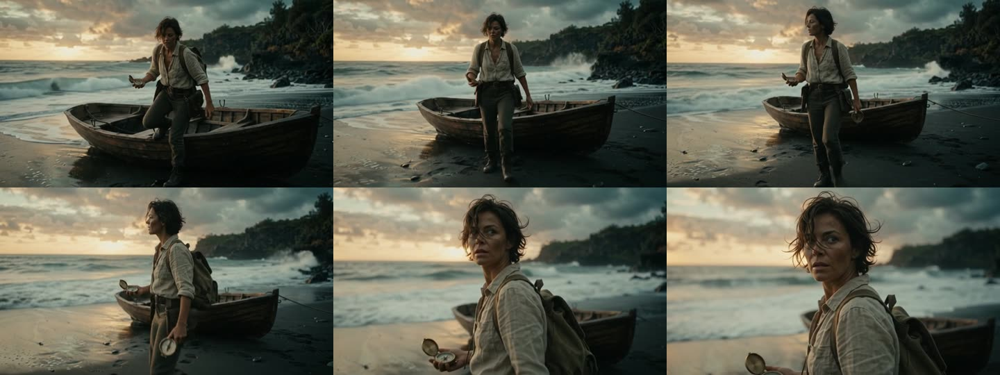
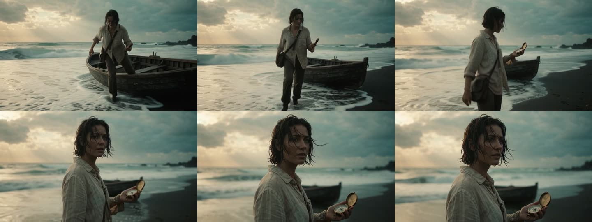
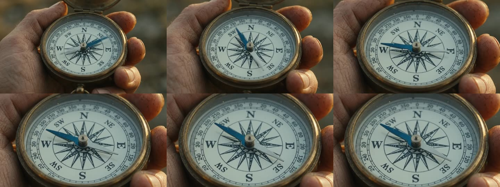
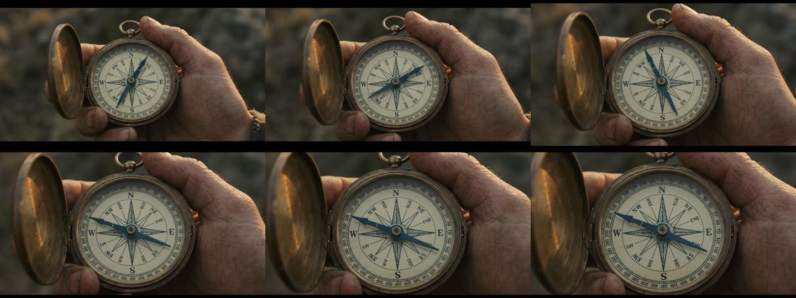
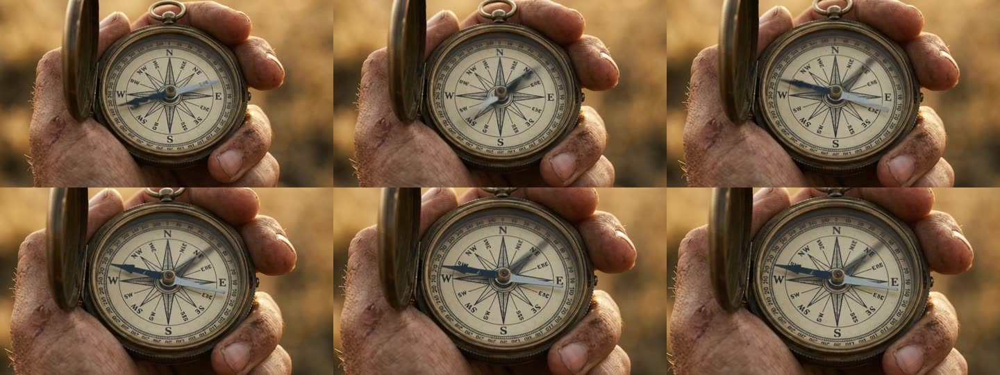
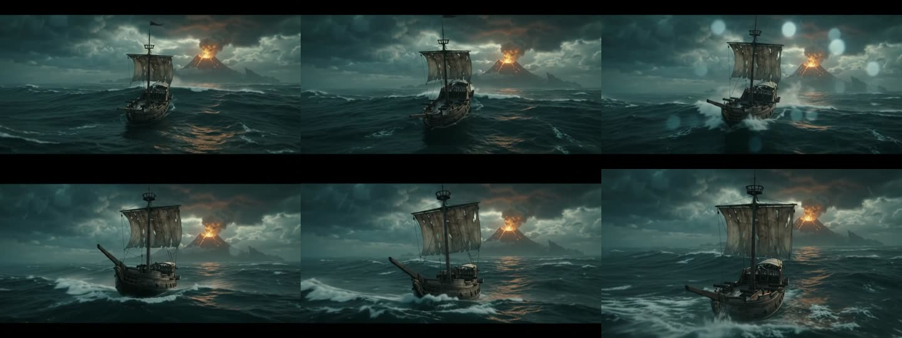
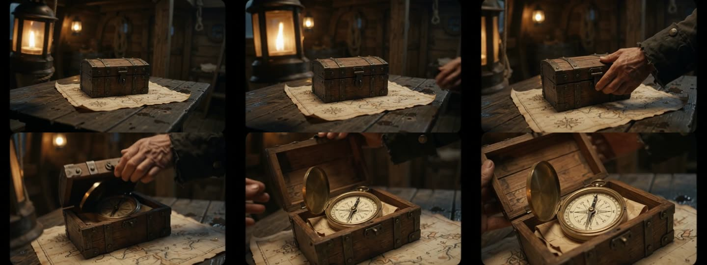
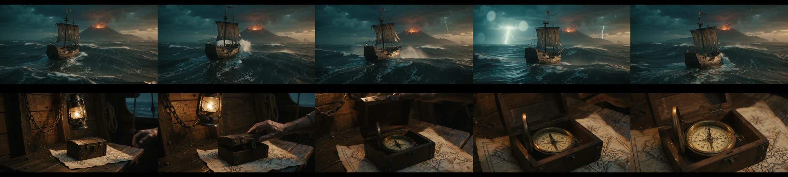

全部 360p 草稿，風格 1 實拍。要決定的：S1 用不用參考圖（建議用）、S2 指南針用哪種做法（建議 ref2）、S3 連續性走分開生成還是 15 秒 timecode。

S1 有參考圖（style-live 定裝圖）。人物、背包＋側背袋、船、海岸都跟定裝圖一致；動作完整：下船、走三步、停、回頭看鏡頭，最後兩格是回頭特寫。建議採用。
The first image is a style and character reference: match its look, the same woman (treasure hunter in her 30s, short dark hair, sun-worn linen shirt, leather satchel), the same volcanic shore and rowboat. Cinematic live-action footage, anamorphic lens, subtle 35mm film grain, moody teal-and-amber grade, shallow depth of field. One continuous handheld tracking shot: she steps out of the wooden rowboat onto wet black sand, takes three steps up the beach, then stops and glances back over her shoulder toward the camera, an antique brass compass in her hand. Waves break behind her, sea spray, wind in her hair. No cuts. No dialogue. No music; only wind, surf and footsteps.

S1 無參考圖。同樣做完動作，但調色偏淡、只有側背袋、臉不同人。證明參考圖有效鎖定人物與色調。
Cinematic live-action footage, anamorphic lens, subtle 35mm film grain, moody teal-and-amber grade, shallow depth of field, golden-hour light breaking through storm clouds. One continuous handheld tracking shot: a treasure hunter in her 30s, short dark hair, sun-worn linen shirt, leather satchel, steps out of a wooden rowboat onto the wet black sand of a wild volcanic island shore, takes three steps up the beach, then stops and glances back over her shoulder toward the camera, an antique brass compass in her hand. Waves break behind her, sea spray, wind in her hair. No cuts. No dialogue. No music; only wind, surf and footsteps.

S2 純文字加強描述。這次沒變時鐘：N E S W、度數環、單一磁針，針擺動後指向 W。但盤面有些字母印錯位置（左上寫 SW）。
Cinematic live-action macro footage, 35mm film grain, golden-hour rim light, shallow depth of field. Extreme close-up of an antique brass MAGNETIC COMPASS held open in a weathered hand. The dial is white enamel with a printed compass rose and the cardinal letters N, E, S, W and a degree ring. There is exactly ONE slender steel needle on a central pivot, blued steel on its north half. NO clock numerals, NO clock hands, NO Roman numerals, NO minute track. The needle swings left and right, slows, and settles pointing firmly toward the letter W, not north. Locked-off camera, slow push-in. No dialogue. No music; only wind and a faint metallic tick.

S2 餵 compass-front 參考圖。盤面與參考圖一致（含 NE/NW 小字與度數環），針擺動後指 W。注意：畫面上下有黑邊（模型自己加了 letterbox）。
The first image is the exact compass to use: reproduce its dial (compass rose, letters N E S W, degree ring) and its single blued-steel needle; do not add clock numerals or clock hands. Cinematic live-action macro footage, 35mm film grain, golden-hour rim light, shallow depth of field. Extreme close-up of this compass held open in a weathered hand. The needle swings left and right, slows, and settles pointing firmly toward the letter W, not north. Locked-off camera, slow push-in. No dialogue. No music; only wind and a faint metallic tick.

S2 餵 compass-front + compass-live 兩張。構圖、手、金色背景都接近 compass-live 定裝圖，盤面一致，針指 W。無黑邊。三種做法裡最穩，建議採用。
The first image is the exact compass to use (dial with compass rose, letters N E S W, degree ring, single blued-steel needle); the second image shows the shot's framing, lighting and the hand holding it: start from that framing. Do not add clock numerals or clock hands. Cinematic live-action macro footage, 35mm film grain, golden-hour rim light, shallow depth of field. The needle swings left and right, slows, and settles pointing firmly toward the letter W, not north. Locked-off camera, slow push-in. No dialogue. No music; only wind and a faint metallic tick.

S3a 海面建立鏡頭（獨立生成）。破帆木船、火山口發光、暴風雨都有；第 3 格鏡頭上有水珠散景。有 letterbox 黑邊。
Cinematic live-action footage, anamorphic lens, subtle 35mm film grain, moody teal-and-amber grade. Wide establishing shot at dusk: a small wooden sailing ship with a single tattered sail pitches through heavy storm swells, rain and spray, a volcanic island with a glowing crater just visible on the horizon through breaking clouds. Slow aerial drift forward toward the ship. No cuts. No dialogue. No music; only wind, rain and waves.

S3a 船艙開盒（獨立生成，餵 compass-front）。油燈、鐵箍木盒、手開蓋露出指南針放在地圖上，盤面大致一致。無黑邊。
The first image is the exact compass to use; do not add clock numerals or clock hands. Cinematic live-action footage, 35mm film grain, warm swinging lantern light, shallow depth of field. Inside a cramped wooden ship's cabin at night, the hull creaking and tilting with the storm: a weathered hand lifts the lid of a small iron-banded wooden box on a table, revealing this brass compass resting on a folded parchment map. Slow push-in toward the box. No cuts. No dialogue. No music; only creaking timbers, muffled storm and rain.

S3b 一支 15 秒 timecode 版：[0-8s] 海面 → [8-15s] 船艙。**第 8 秒準確切換**，前後段調色一致，還多了一道閃電。有 letterbox 黑邊。價格跟兩支分開生成一樣（$0.355 vs $0.341）。
The first image is the exact compass to use; do not add clock numerals or clock hands. Cinematic live-action footage, anamorphic lens, subtle 35mm film grain, moody teal-and-amber grade. [0-8s] Wide establishing shot at dusk: a small wooden sailing ship with a single tattered sail pitches through heavy storm swells, rain and spray, a volcanic island with a glowing crater just visible on the horizon. Slow aerial drift forward toward the ship. [8-15s] Cut to the cramped wooden cabin inside the ship at night, lantern swinging: a weathered hand lifts the lid of a small iron-banded wooden box on a table, revealing the brass compass resting on a folded parchment map. Slow push-in. No dialogue. No music; only wind, rain, waves and creaking timbers.